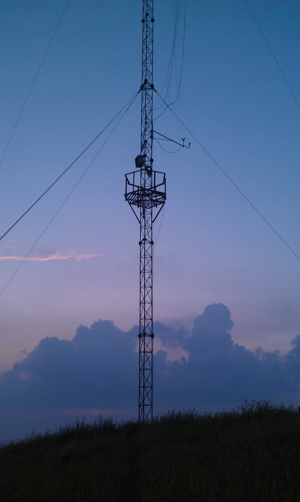
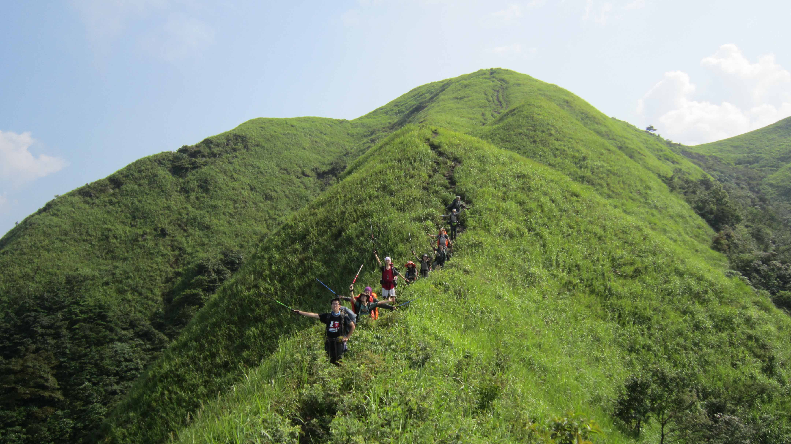
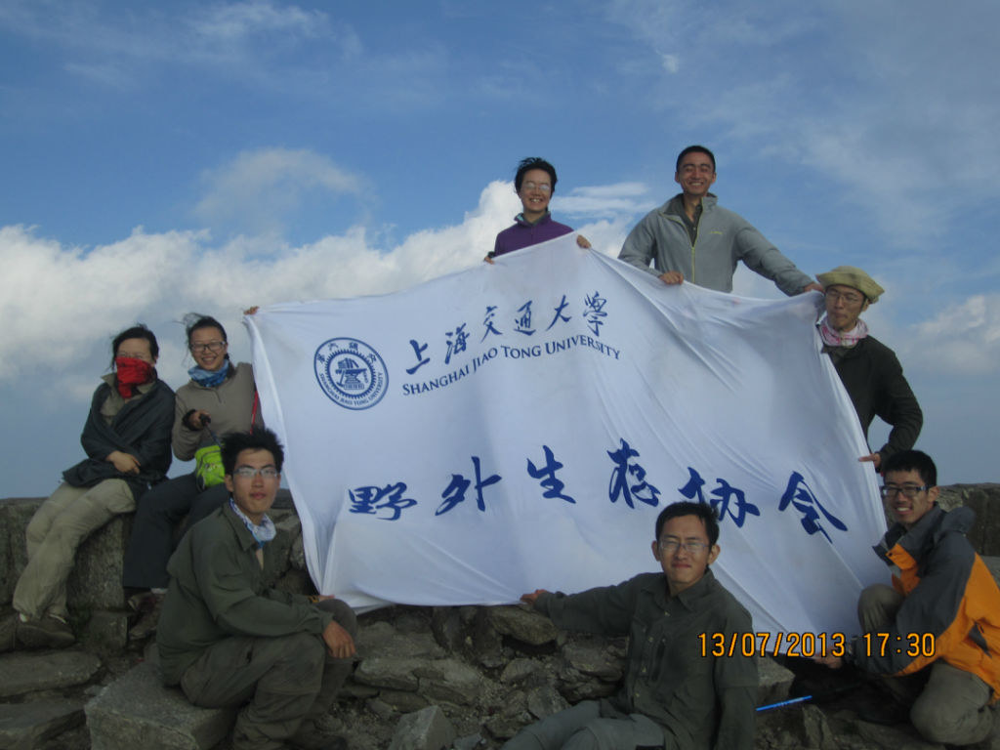
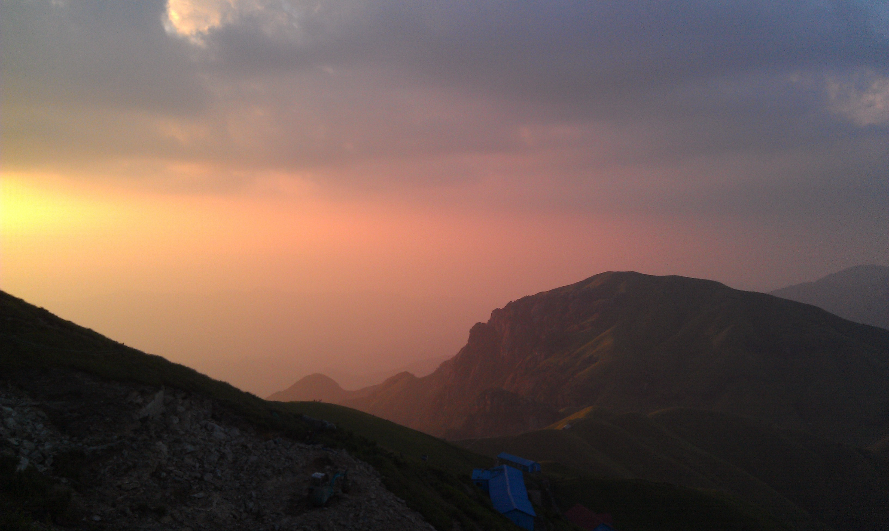
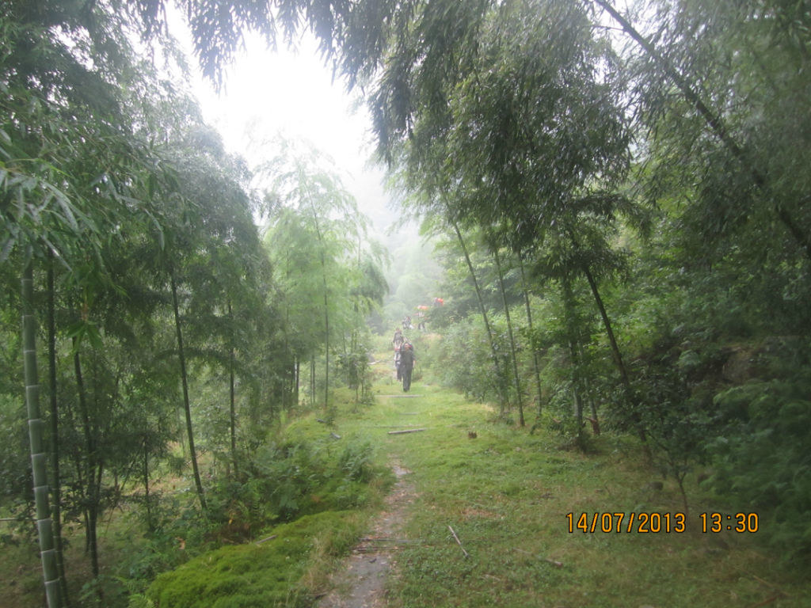

发信人: wayneleaf (大熊家的葉小宝｜喜欢上海的理由), 信区: outdoor
标 题: 【合集】重回武功山
发信站: 饮水思源 (2013年10月28日11:51:40 星期一), 站内信件
☆──────────────────────────────────────☆
yyhh (yyhh) 于 2013年07月20日19:22:05 星期六)
提到：
来搞一发游记~这趟真的很开心~
开始蜕皮了，似曾相识。在接下来的一个月里，就要不停地把脸上黝黑的旧皮肤撕掉，就
像去年走完武功山一样。平心而论，撕皮是件挺有趣的事情，看着自己一天天由黑变白，
尤其对于手闲不住的我来说。武功山就是以这样的方式，能够让我继续铭记它。
在这次出发之前，已经有很久很久没有走线了，各种原因，一直犹犹豫豫地，错过了很多
。再上武功山，也是出发前几天才决定的。去年的回忆还历历在目，这次去是怀旧，也是
去找寻一些新的感受，顺便虐虐越发疲软的身体。
先吐槽一下毫无敬老美德的领队，打完包试包的那一刻，腐败休闲轻量化，撑把阳伞磕磕
枣的幻想全都被碾碎了，收紧腰带的时候仿佛听到了髋骨碎裂的声音。。忘了带大檐帽，
没有带护膝，我真心是要把自己虐的遍体鳞伤啊…
临行了，会长送来了三个西瓜，顿时泪流满面。现在ZZM已经身在异国，想来他当时来给我
们践行，也是为自己践行吧，有点小忧伤。至于说好要带上金顶的三个西瓜，后面再交代
吧。然后合影，出发。
第一盆冷水来的比想象的要快，在去地铁站的出租车上，司机问：“是去登山吗？”“是
啊。”“连到地铁站的路都要做车，还去登山啊。”…终于连领队也抛弃我们了。地铁站
，领队豪迈地说：“人齐了，我们走。”然后潇洒地转身，步入车厢，车门关上，列车随
之驶去，剩下我们在风中凌乱…
虽然有些磕磕绊绊，但也算顺利地到达了萍乡。两只西瓜在火车上被干掉了（也不能怪我
们贪吃，西瓜自己掉在地上摔成了几瓣…）。剩下一个，在领队的誓死捍卫之下，还是带
上了路。
车到下村，山野间的一栋小平房，门口栓着两条呆萌的狗，见人狂吠，一年了，这里一点
都不曾变过。走上了山路，走进了密林，跨过竹桥与山涧，蛛网，湿泥，鸟鸣，一切的一
切新鲜又熟悉。用髋部承受重量，用脚感觉山路，很久不曾行走户外，一点一点地调整自
己的状态和行走的节奏。1000米持续不断的爬升，去年走的欲死欲活，如今也就很顺畅地
走完了。继续在密林中行进，在和去年差不多同样的地方开始下雨，全身湿透，走的也挫
了，莽莽密林似乎永远没有尽头，内心开始呼唤草甸。雨势大但并不持久，遥远的隔着几
个山头的地方依稀可以看到翠绿平整的草甸。
走出密林的一刻，眼前一片金色的光芒，日光之下是漫山遍野的芳草，绵延起伏的山脊。
碧草蓝天，无垠旷野，又回到了这里。没有很震惊，没有很感慨，平平淡淡的，但是很愉
悦，很舒心，即使带着爬坡的疲惫，被烈日的暴晒。离营地不远，走的也很随意了，很从
容地欣赏着如画的风景。在客栈边的空地扎了营，腐败的晚餐进行了很久，硕果仅存的西
瓜也终于被瓜分。不知道大家为什么要吐槽我，果珍泡沙琪玛其实挺好吃的~
渐渐暮色昏沉，突然很狗血地想要去看落日，和雪哥，石头，晓远一同出发。很奇怪地，
走了这么多路，爬了这么多坡，看了这么多挫事槽点，最让我难忘的依然是那一晚的夕阳
。天色已经昏暗，只是在山坡背后映着一抹淡淡的残红，不知太阳是否已经落山。我们不
顾路径，直接向山顶切去。能看到山坡之后的霞光一点点透亮起来，真的觉得，爬上坡顶
就能看到落日。心情愈发急切，脚步迈得更开，就像在追逐着夕阳。登上坡顶的一刻，并
没有看到想象中那轮殷红的落日，只有天际淡淡的霞光，如絮的云彩。四周空旷静寂，只
有风吹草动。高耸入云的信号塔矗立在坡顶，吃力地仰头看着塔尖指向苍穹，有种很浩渺
的感觉。草甸，高塔，水平面与垂直面上无尽的延伸，这两者结合在一起，是一种无比空
旷的感觉，天地间的庞大浩荡，让我觉得不知自己置身何处。我们在坡顶呆了很久，留影
，赏景，直到月牙出现在夜空中，霞光仍未褪去。这是我看过最美的夕阳。
 screen.width - 200){this.width = screen.width - 200}">
有时只是为了一个简单的信念去爬一座坡，到最后，即使没有看到想看的落日，也会看到
壮美的夕阳。足够了。生活中我们做的每件事都有存在的意义。
下坡后，去寻觅洗澡之处。接了一盆水，就和领队、学习机找了个僻静猥琐的角落，脱光
衣服搅基去了。搅完基，不，洗完澡后全身清爽不少。头顶星空璀璨。很充实，很完美的
一天。
第二天，绝望坡。心理上有充足的准备，所以每一次艰辛地爬到坡顶又看到下一个更高的
坡时，总能够把嘴边的某词咽回去，喘口气，继续爬坡。爬过两座绝望坡，隔着群山，能
够看到金顶了。天空依旧明朗，偶尔有浮云以肉眼可见的速度飘过，略微遮挡烈日的暴晒
。当我们步入景区，脚下出现石阶的时候，真的离金顶已经不远了。石阶无穷无尽地向山
顶延伸，当数到1500级左右的时候，石阶到了尽头，金顶也就在眼前。
 screen.width - 200){this.width = screen.width - 200}">
出发前就听说武功山的石碑被雷劈了，来到金顶上，看到原来石碑巍然耸立的地方只剩一
堆断石残桓，觉得有些伤感，又有点搞笑。石碑的残骸散落在山顶各处，无人收检。山顶
上扎满了帐篷，大概都是出来露营的家庭，很热闹。仅仅过了一年而已，我都不曾改变什
么，这个地方却变得如此不同。山顶上的风倒是依旧很大，无比艰难地把会长的床单展开
，开始合影~好像表情都很窘，大家都被风吹傻逼了…去年登顶之后在山顶躺了半天，感慨
万千，今年却并无此意。觉得以前的自己有点矫情，见得多，也自然看得淡了吧。
 screen.width - 200){this.width = screen.width - 200}">
去打水的时候看到了很美的景色。夕阳射入山谷，红光充盈在山野间。美景总是在这么不
经意间出现在眼前吧。
 screen.width - 200){this.width = screen.width - 200}">
扎营依旧是在去年阴森的古庙。虔诚地拜了一下庙里的土地神，祈愿接下来的行程顺利。
事实证明我一定诚意不够，或者因为我们在庙里吃喝太腐败触怒了神灵，或者一路吐槽高
神太多败了人品，第三天又是大雾又是暴雨。1000米的下降略毁膝盖，连滑带摔好几次，
不是我太挫就是所谓的V底太挫了。。下到平地就开始下暴雨，雨中暴走了一个多小时，感
觉脚底板被虐的千疮百孔。终于到达村子，有种很超脱的感觉。回首身后的山，烟雨迷蒙
。
 screen.width - 200){this.width = screen.width - 200}">
次日早上回到上海，收拾收拾心情，回归生活。
想想，下学期也滚蛋了，这可能是很长一段时间内走的最后一条线路了。山上的三天，很
美好，很艰辛，很脑残，很腐败。又一份沉甸甸的回忆。
☆──────────────────────────────────────☆
wayneleaf (大熊家的葉小宝｜喜欢上海的理由) 于 2013年07月20日19:23:24 星期六)
提到：
sf
【 在 yyhh 的大作中提到: 】
: 来搞一发游记~这趟真的很开心~
: 开始蜕皮了，似曾相识。在接下来的一个月里，就要不停地把脸上黝黑的旧皮肤撕掉..
: 像去年走完武功山一样。平心而论，撕皮是件挺有趣的事情，看着自己一天天由黑变..
: 尤其对于手闲不住的我来说。武功山就是以这样的方式，能够让我继续铭记它。
: 在这次出发之前，已经有很久很久没有走线了，各种原因，一直犹犹豫豫地，错过了..
: 。再上武功山，也是出发前几天才决定的。去年的回忆还历历在目，这次去是怀旧，..
: 去找寻一些新的感受，顺便虐虐越发疲软的身体。
: 先吐槽一下毫无敬老美德的领队，打完包试包的那一刻，腐败休闲轻量化，撑把阳伞..
: 枣的幻想全都被碾碎了，收紧腰带的时候仿佛听到了髋骨碎裂的声音。。忘了带大檐..
: 没有带护膝，我真心是要把自己虐的遍体鳞伤啊…
: 临行了，会长送来了三个西瓜，顿时泪流满面。现在ZZM已经身在异国，想来他当时..
: 们践行，也是为自己践行吧，有点小忧伤。至于说好要带上金顶的三个西瓜，后面再..
: 吧。然后合影，出发。
: 第一盆冷水来的比想象的要快，在去地铁站的出租车上，司机问：“是去登山吗？”..
: 啊。”“连到地铁站的路都要做车，还去登山啊。”…终于连领队也抛弃我们了。地..
: ，领队豪迈地说：“人齐了，我们走。”然后潇洒地转身，步入车厢，车门关上，列..
: 之驶去，剩下我们在风中凌乱…
: 虽然有些磕磕绊绊，但也算顺利地到达了萍乡。两只西瓜在火车上被干掉了（也不能..
: 们贪吃，西瓜自己掉在地上摔成了几瓣…）。剩下一个，在领队的誓死捍卫之下，还..
: 上了路。
: (以下引言省略...)
☆──────────────────────────────────────☆
wayneleaf (大熊家的葉小宝｜喜欢上海的理由) 于 2013年07月20日19:25:51 星期六)
提到：
...果珍泡沙琪玛不怕甜死。。。
【 在 yyhh 的大作中提到: 】
: 来搞一发游记~这趟真的很开心~
: 开始蜕皮了，似曾相识。在接下来的一个月里，就要不停地把脸上黝黑的旧皮肤撕掉..
: 像去年走完武功山一样。平心而论，撕皮是件挺有趣的事情，看着自己一天天由黑变..
: 尤其对于手闲不住的我来说。武功山就是以这样的方式，能够让我继续铭记它。
: 在这次出发之前，已经有很久很久没有走线了，各种原因，一直犹犹豫豫地，错过了..
: 。再上武功山，也是出发前几天才决定的。去年的回忆还历历在目，这次去是怀旧，..
: 去找寻一些新的感受，顺便虐虐越发疲软的身体。
: 先吐槽一下毫无敬老美德的领队，打完包试包的那一刻，腐败休闲轻量化，撑把阳伞..
: 枣的幻想全都被碾碎了，收紧腰带的时候仿佛听到了髋骨碎裂的声音。。忘了带大檐..
: 没有带护膝，我真心是要把自己虐的遍体鳞伤啊…
: 临行了，会长送来了三个西瓜，顿时泪流满面。现在ZZM已经身在异国，想来他当时..
: 们践行，也是为自己践行吧，有点小忧伤。至于说好要带上金顶的三个西瓜，后面再..
: 吧。然后合影，出发。
: 第一盆冷水来的比想象的要快，在去地铁站的出租车上，司机问：“是去登山吗？”..
: 啊。”“连到地铁站的路都要做车，还去登山啊。”…终于连领队也抛弃我们了。地..
: ，领队豪迈地说：“人齐了，我们走。”然后潇洒地转身，步入车厢，车门关上，列..
: 之驶去，剩下我们在风中凌乱…
: 虽然有些磕磕绊绊，但也算顺利地到达了萍乡。两只西瓜在火车上被干掉了（也不能..
: 们贪吃，西瓜自己掉在地上摔成了几瓣…）。剩下一个，在领队的誓死捍卫之下，还..
: 上了路。
: (以下引言省略...)
☆──────────────────────────────────────☆
wzdxt (Enter nickname) 于 2013年07月20日21:43:45 星期六)
提到：
绿油油的武功山 \(≧▽≦)/
【 在 yyhh 的大作中提到: 】
: 来搞一发游记~这趟真的很开心~
: 开始蜕皮了，似曾相识。在接下来的一个月里，就要不停地把脸上黝黑的旧皮肤撕掉..
: 像去年走完武功山一样。平心而论，撕皮是件挺有趣的事情，看着自己一天天由黑变..
: 尤其对于手闲不住的我来说。武功山就是以这样的方式，能够让我继续铭记它。
: 在这次出发之前，已经有很久很久没有走线了，各种原因，一直犹犹豫豫地，错过了..
: 。再上武功山，也是出发前几天才决定的。去年的回忆还历历在目，这次去是怀旧，..
: 去找寻一些新的感受，顺便虐虐越发疲软的身体。
: 先吐槽一下毫无敬老美德的领队，打完包试包的那一刻，腐败休闲轻量化，撑把阳伞..
: 枣的幻想全都被碾碎了，收紧腰带的时候仿佛听到了髋骨碎裂的声音。。忘了带大檐..
: 没有带护膝，我真心是要把自己虐的遍体鳞伤啊…
: 临行了，会长送来了三个西瓜，顿时泪流满面。现在ZZM已经身在异国，想来他当时..
: 们践行，也是为自己践行吧，有点小忧伤。至于说好要带上金顶的三个西瓜，后面再..
: 吧。然后合影，出发。
: 第一盆冷水来的比想象的要快，在去地铁站的出租车上，司机问：“是去登山吗？”..
: 啊。”“连到地铁站的路都要做车，还去登山啊。”…终于连领队也抛弃我们了。地..
: ，领队豪迈地说：“人齐了，我们走。”然后潇洒地转身，步入车厢，车门关上，列..
: 之驶去，剩下我们在风中凌乱…
: 虽然有些磕磕绊绊，但也算顺利地到达了萍乡。两只西瓜在火车上被干掉了（也不能..
: 们贪吃，西瓜自己掉在地上摔成了几瓣…）。剩下一个，在领队的誓死捍卫之下，还..
: 上了路。
: (以下引言省略...)
☆──────────────────────────────────────☆
ekc (西域猎鹰) 于 2013年07月20日22:39:08 星期六)
提到：
嗯哼~~~武功第一槽点人物~~
【 在 yyhh 的大作中提到: 】
: 来搞一发游记~这趟真的很开心~
: 开始蜕皮了，似曾相识。在接下来的一个月里，就要不停地把脸上黝黑的旧皮肤撕掉..
: 像去年走完武功山一样。平心而论，撕皮是件挺有趣的事情，看着自己一天天由黑变..
: 尤其对于手闲不住的我来说。武功山就是以这样的方式，能够让我继续铭记它。
: 在这次出发之前，已经有很久很久没有走线了，各种原因，一直犹犹豫豫地，错过了..
: 。再上武功山，也是出发前几天才决定的。去年的回忆还历历在目，这次去是怀旧，..
: 去找寻一些新的感受，顺便虐虐越发疲软的身体。
: 先吐槽一下毫无敬老美德的领队，打完包试包的那一刻，腐败休闲轻量化，撑把阳伞..
: 枣的幻想全都被碾碎了，收紧腰带的时候仿佛听到了髋骨碎裂的声音。。忘了带大檐..
: 没有带护膝，我真心是要把自己虐的遍体鳞伤啊…
: 临行了，会长送来了三个西瓜，顿时泪流满面。现在ZZM已经身在异国，想来他当时..
: 们践行，也是为自己践行吧，有点小忧伤。至于说好要带上金顶的三个西瓜，后面再..
: 吧。然后合影，出发。
: 第一盆冷水来的比想象的要快，在去地铁站的出租车上，司机问：“是去登山吗？”..
: 啊。”“连到地铁站的路都要做车，还去登山啊。”…终于连领队也抛弃我们了。地..
: ，领队豪迈地说：“人齐了，我们走。”然后潇洒地转身，步入车厢，车门关上，列..
: 之驶去，剩下我们在风中凌乱…
: 虽然有些磕磕绊绊，但也算顺利地到达了萍乡。两只西瓜在火车上被干掉了（也不能..
: 们贪吃，西瓜自己掉在地上摔成了几瓣…）。剩下一个，在领队的誓死捍卫之下，还..
: 上了路。
: (以下引言省略...)
|